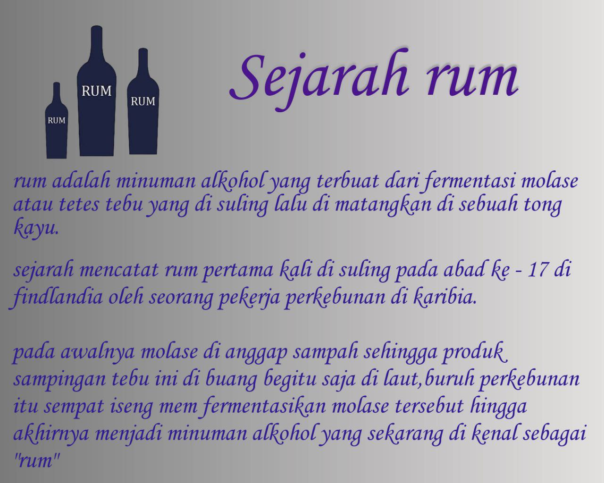

p
Artikel
Sejarah Rum
Rum adalah minuman alkohol yang terbuat dari fermentasi molase atau tetes tebu yang disuling lalu dimatangkan di sebuah tong kayu.
Sejarah mencatat rum pertama kali di suling pada abad ke-17 di Finlandia oleh seorang pekerja perkebunan di Karibia.
Pada awalnya molase di anggap sampah, sehingga produk sampingan tebu ini dibuang begitu saja di laut, buruh perkebunan itu sempat iseng mem-fermentasi molase tersebut hingga akhirnya menjadi minuman alkohol yang sekarang di kenal sebagai "Rum".
Produk Mantra
Spice Gold
Mantra "Spiced Gold" adalah salah satu variant Javanese rum yang di tambahkan dengan rempah asli Indonesia yang membuat rum ini memiliki rasa kuat rempah namun tetap halus dan nikmat.
Beli SekarangNautica
Mantra "Nautica" adalah variant Javanese rum yang di tambah dengan rasa buah segar dan halus yang membuat hari mu lebih berwarna.
Beli SekarangCherry Blossom
Mantra "Cherry Blossom" adalah rum tradisional dengan tambahan bunga sakura yang cantik dan manis membuat harimu jadi berwarna.
Beli SekarangRed Bavarian
Mantra "Red Bavarian" adalah rum lokal yang dibuat dengan tambahan berry dengan rasa segar yang membuat musim gugur menjadi lebih berwarna.
Beli Sekarang